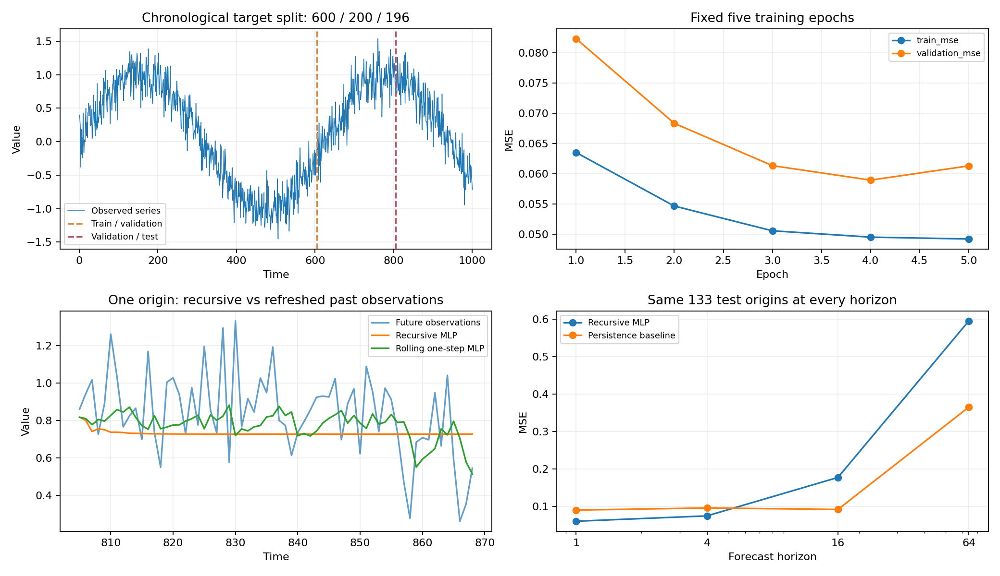
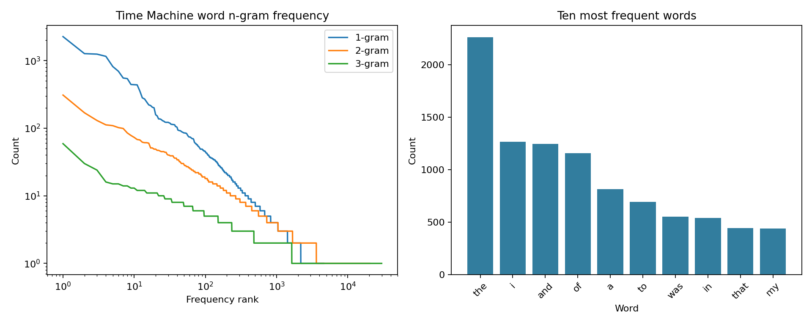
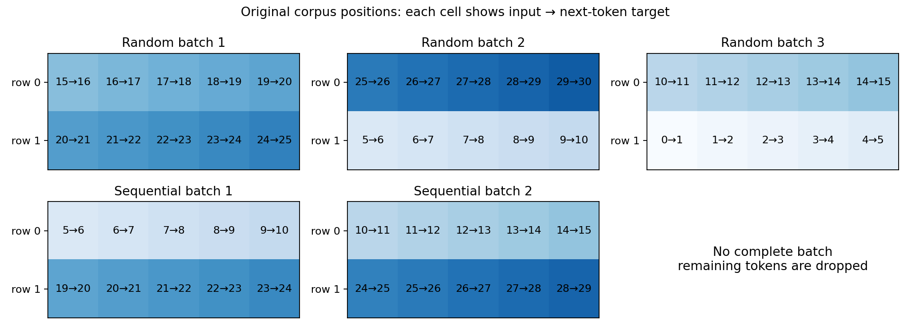

第18周完成卷积网络对照后，本周按计划进入《动手学深度学习》第8章8.1—8.3。先用数值序列理解“根据过去预测未来”，再把文本变成词元索引和形状固定的批次，为后续循环神经网络训练准备输入。
本周完成：8个编号示例和绘图脚本运行成功，9项自动测试通过。实际训练的是61个参数的自回归MLP，固定5轮；文本部分完成清洗、词表、词频和两类采样，本周尚未训练RNN语言模型。博客发布日期为2026年11月24日，周报按前一份顺延为11月29日。
一、把时间序列变成监督学习窗口
教材用带噪声的正弦序列说明自回归预测。本次固定seed=42，生成1000个观测，形式为sin(0.01t)加标准差0.2的高斯噪声。每次取前4个观测作为输入，预测紧接着的一个值，得到996个样本；模型没有直接使用生成序列的正弦公式。
# 第t个目标只使用它之前的4个观测
inputs = series[t - 4:t]
target = series[t]按目标时刻顺序划分600个训练、200个验证和196个测试窗口。零基目标索引分别为4—603、604—803和804—999。窗口可以跨边界使用过去已到达的观测，但不同分区的目标时刻没有重叠；仅训练窗口内部打乱，完整时间序列没有随机划分。
二、单步预测先与简单基线比较
模型使用Linear(4,10)→ReLU→Linear(10,1)，共61个参数，线性层权重用Xavier初始化。CPU上运行5轮，batch size为16，Adam学习率0.01，以平均平方误差MSE训练。实验方案在训练前保存，报告固定第5轮，不按验证或测试成绩更换模型。
| 评估对象 | 样本数 | MSE |
|---|---|---|
| 训练集MLP | 600 | 0.049199 |
| 验证集MLP | 200 | 0.061283 |
| 测试集MLP | 196 | 0.054745 |
| 测试集最近观测值基线 | 196 | 0.082490 |
最近观测值基线直接用窗口最后一个真实值预测下一时刻，不需要训练。这个对照帮助判断小网络是否只做了类似“复制昨天”的事情。本次单步测试中MLP误差较低，但这仅是一条合成序列、一个随机种子的结果。
第4轮验证MSE约0.058926，第5轮约0.061283。完整历史保留这次回升，最终仍报告预先固定的第5轮。模型权重已保存，重新载入后在196个测试窗口上的预测逐位一致。
三、递归预测为什么不能照搬单步成绩
滚动单步预测在每个时刻都能接收刚到达的真实历史。递归预测则在起点之后没有新观测，必须把自己的输出送回下一次预测。这两种任务的信息条件不同，单步表现不能直接代表远期预测表现。
predicted = model(windows)
windows = torch.cat((windows[:, 1:], predicted), dim=1)多步实验统一使用测试区间的133个滚动起点，保证每个起点都有完整64步未来观测。每个起点只提供4个过去观测，递归期间不注入未来真值；基线在所有步长都沿用起点之前最后一个真实值。
| 预测步长 | 共同起点数 | 递归MLP MSE | 最近观测值基线MSE |
|---|---|---|---|
| 1 | 133 | 0.060383 | 0.090095 |
| 4 | 133 | 0.074637 | 0.095929 |
| 16 | 133 | 0.177318 | 0.091807 |
| 64 | 133 | 0.595572 | 0.365330 |

在本次记录中，MLP的1步和4步误差低于基线，16步和64步误差反而更高。图中一个起点的递归轨迹逐渐接近平坦值，说明单步拟合较好并不保证长距离变化也能被保留。133个起点存在重叠，误差不能当作133次独立实验；这组指标也与上节196个窗口的单步指标使用不同分母。
四、把原始文本清洗成词元
文本使用教材官方提供的《时间机器》语料。下载后核对教材给定的SHA-1：090b5e7e70c295757f55df93cb0a180b9691891a，并保存到本地data目录，后续可离线复用。
清洗步骤与教材一致：将非英文字母的连续片段变为空格，去首尾空白并转换为小写。单词分词使用空白切分；字符分词保留字母和行内空格。展平各行时没有额外加入换行符，原始行边界会消失，这也是后续解释文本片段时需要注意的预处理选择。
| 统计项 | 实际结果 |
|---|---|
| 文本行数 | 3,221 |
| 清洗后单词数 | 32,775 |
| 不同单词数 | 4,579 |
| 单词词表（含未知词） | 4,580 |
| 字符数 | 170,580 |
| 字符词表（含未知词） | 28 |
| 不同二元词组 | 20,234 |
| 不同三元词组 | 29,882 |
第一行清洗为the time machine by h g wells，单词与字符是两种不同粒度；本周后面的采样准备使用字符粒度，不能把单词词表大小与字符模型输出维数混在一起。
五、词表编码与一元二元三元词频
词表将词元映射成连续整数，未知词统一使用索引0。保留词元去重，低频词可以按min_freq过滤，反向映射可把已知词元索引还原成文本。本次字符词表有26个字母、1个空格及1个未知词，共28项。
清洗语料中最高频单词为the，共2261次；最高频二元词组为of the，共309次；最高频三元词组为the time traveller，共59次。词组统计跨越了展平后的原始行边界，不能再把这些边界解释为自然句子边界。

完整语料的词频和词表在这里是描述统计，没有训练语言模型，也没有据此报告困惑度或文本生成质量。后续进入实际模型训练时，需要先明确训练与验证语料的划分和词表拟合范围。
六、随机采样与顺序采样
语言模型的输入X与标签Y长度相同，Y来自原语料后移一个位置。例子中X为[5,6,7,8,9]时，Y为[6,7,8,9,10]。真实语料的词元索引未必数值相邻，因此测试会对照原语料窗口，而不是断言“标签数值等于输入加1”。
随机采样先切出固定长度窗口，再打乱窗口顺序；相邻批次的同一行通常不相连。顺序采样先把连续语料分成若干行，再沿每行切出批次，因此同一行可以跨批次保持连续。这一差异会决定未来RNN隐状态应该重置还是延续。

两种采样器都允许局部随机偏移，并丢弃不足一个完整批次的尾部。演示代码使用局部随机数生成器，不改变全局随机状态；相同seed可重现同一批次顺序。实际多轮训练应显式改变每轮seed，避免一直使用相同的随机排列。
七、真实字符批次与自动检查
取前10000个字符，设置batch size=32、num_steps=35。两种采样器各生成8个完整批次，即8960个输入词元；每批X、Y均为长整型的32×35张量，索引落在词表范围内。
| 采样器 | 批次数 | 每批形状 | 输入词元数 | 检查结果 |
|---|---|---|---|---|
| random | 8 | 32 × 35 | 8960 | 批内错位 |
| sequential | 8 | 32 × 35 | 8960 | 批内错位与跨批次同行连续 |
批内验证X[:,1:] == Y[:,:-1]。顺序采样还验证上一批Y每行最后一项等于下一批X同一行第一项。9项自动测试另外覆盖因果滞后窗口、递归回填、不修改输入、未知词与低频过滤、空行、短语料、非法参数和随机状态隔离。
这些检查说明数据准备满足预期的形状与错位关系，不能替代未来模型的训练和验证。模型保存恢复、实验配置、逐轮结果、文本哈希和采样记录均已保留。
八、下一周计划与教材链接
第20周继续学习8.4—8.6，理解循环隐状态、独热编码和梯度裁剪，练习RNN从零实现与简洁实现。先核对输入、输出与隐状态形状，再在分清训练和验证语料后记录损失、困惑度和文本生成样例。